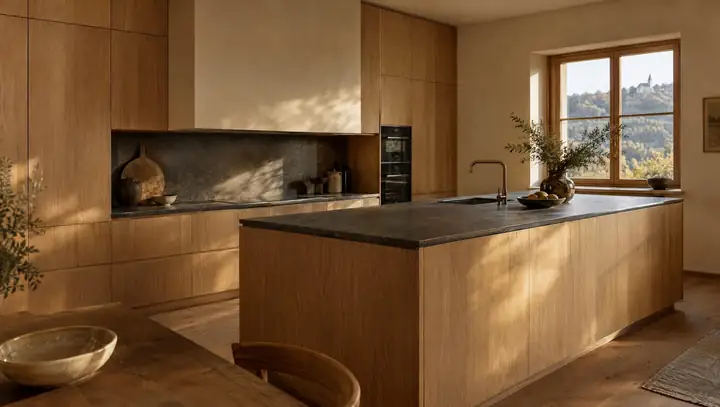
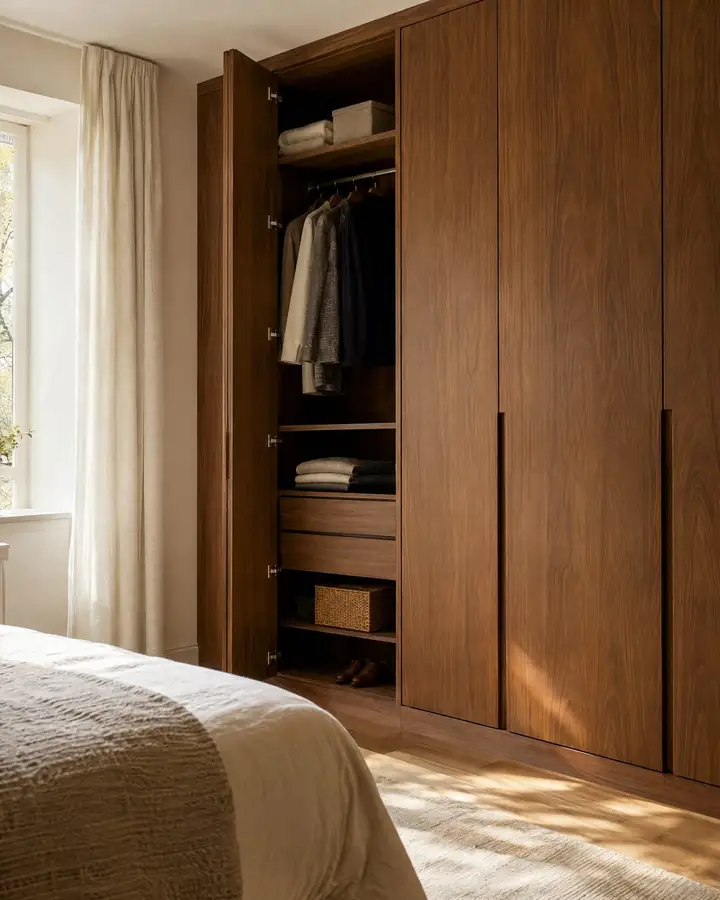
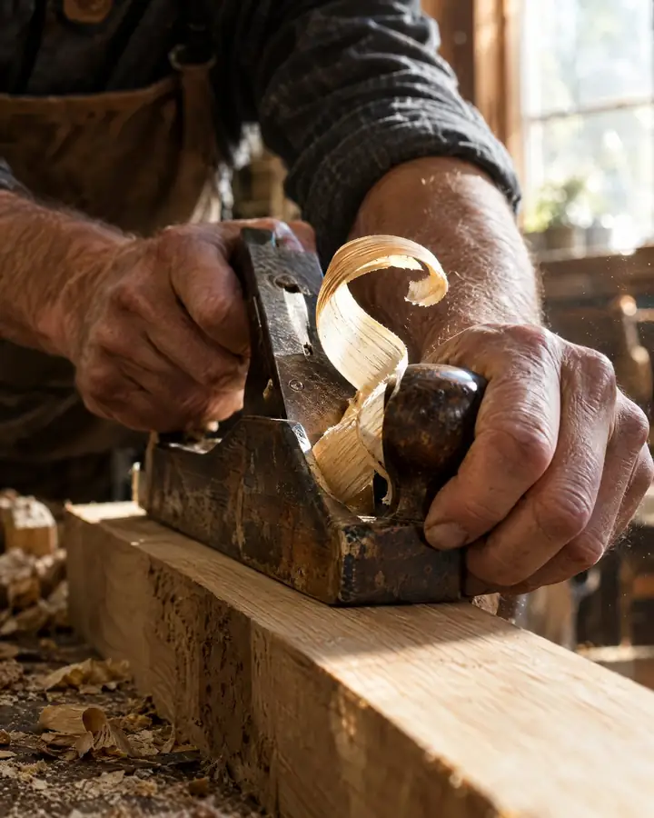
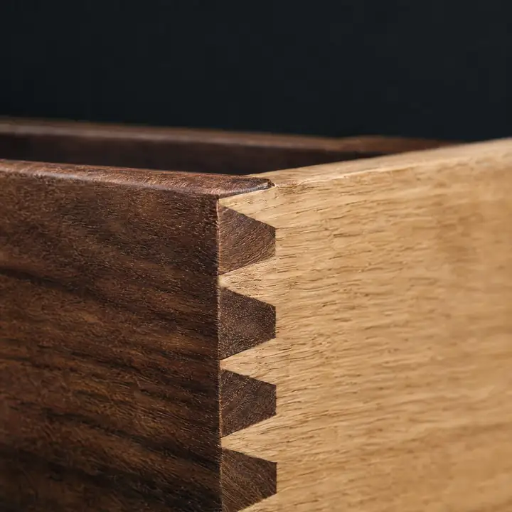
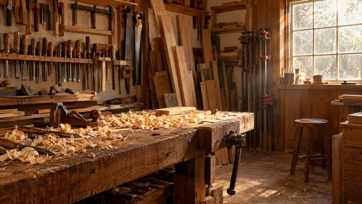

Vse fotografije na tej strani so ilustrativni prikazi (ustvarjeni z umetno inteligenco) in ne prikazujejo izdelkov mizarstva Dejan Umek. Fotografije lastnih izdelkov bodo dodane po dogovoru.
Delo
Pohištvo po meri iz domače delavnice v Stari Cerkvi. Od prvega pogovora in izmere do montaže pri vas doma.
- 01
Pohištvo po meri
Prilagojeno točnim meram, nišam in poševninam vašega doma, tam, kjer serijsko pohištvo ne zadošča.
- 02
Kuhinje
Kuhinja, zasnovana okoli vašega načina kuhanja in prostora, ki ga imate.
- 03
Omare in garderobe
Vgradne omare in garderobe, ki izkoristijo vsak centimeter.
- 04
Notranja vrata
Stavbno pohištvo, ki se ujema z vašim interierjem.
- 05
Obnova pohištva
Pohištvu, na katerega ste navezani, vrnemo uporabnost in videz.
Registrirane dejavnosti: mizarstvo, stavbno pohištvo, pohištvo in oprema.
Od mere do montaže
-
01
»Kaj potrebujete?«
Posvet
Pokličete in poveste, kaj potrebujete. Pogovorimo se o željah, namenu in prostoru.
-
02
Izmera
Prostor natančno izmerimo, da se pohištvo prilega brez kompromisov.
-
03ilustracija
Izdelava po meri
Pohištvo nastane v delavnici, po dogovorjenih merah, materialu in obdelavi.
-
04ilustracija
Montaža
Izdelek pripeljemo in ga sestavimo na mestu, pripravljen za uporabo.
Podatki
- Podjetje
- Mizarstvo Dejan Umek s.p.
- Kraj
- Stara Cerkev pri Kočevju
- Telefon
- 041 708 628
- Od leta
- 1997, registrirana dejavnost
- Delovni čas
- Pokličite za dogovor
- Zemljevid
- Odpri v Google Maps